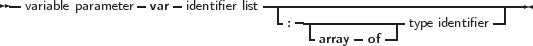

Variable parameters are declared as follows:
_________________________________________________________________________________________________________
Variable parameters

___________________________________________________________________
When parameters are declared as variable parameters, the procedure or function accesses immediately the variable that the calling block passed in its parameter list. The procedure gets a pointer to the variable that was passed, and uses this pointer to access the variable’s value. From this, it follows that any changes made to the parameter, will propagate back to the calling block. This mechanism can be used to pass values back in procedures. Because of this, the calling block must pass a parameter of exactly the same type as the declared parameter’s type. If it does not, the compiler will generate an error.
Variable and constant parameters can be untyped. In that case the variable has no type, and hence is incompatible with all other types. However, the address operator can be used on it, or it can be passed to a function that has also an untyped parameter. If an untyped parameter is used in an assignment, or a value must be assigned to it, a typecast must be used.
File type variables must always be passed as variable parameters.
Open arrays can be passed as variable parameters. See section 14.4.5, page 699 for more information on using open arrays.
Remark: